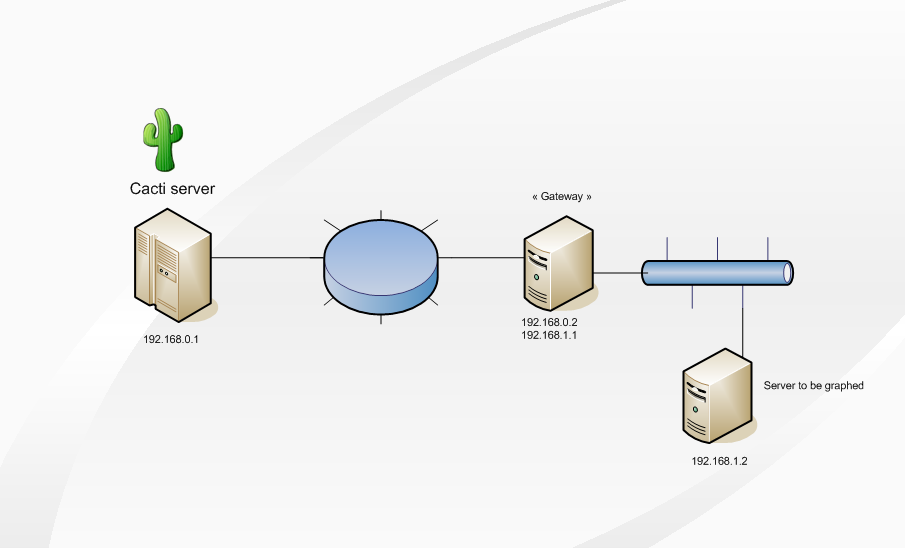
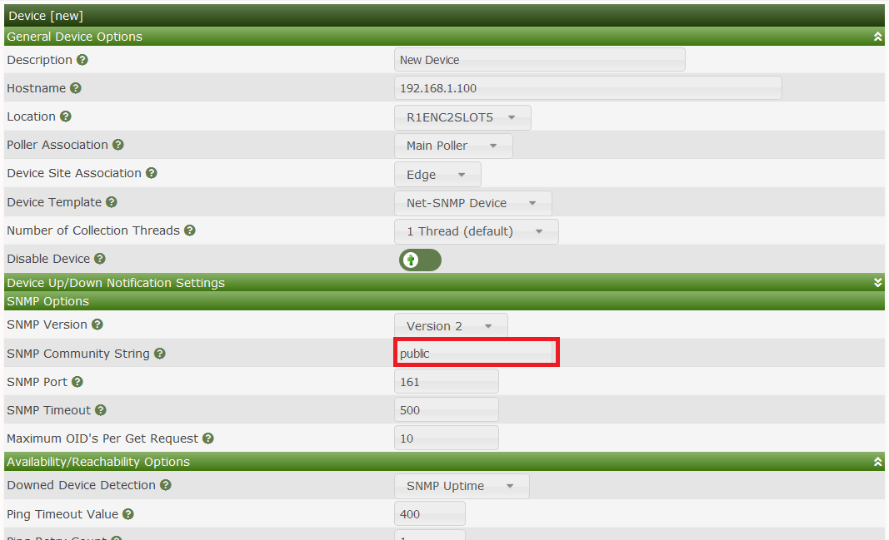

Howto created by fmangeant at Cacti Forum
This HowTo will explain how to use SSH tunnels to graph a Unix server that isn't directly reachable by your Cacti server :

In this example, the Cacti server can reach the Gateway, which can reach the target server.
On Gateway, create a "cactiuser" user :
# useradd -d /home/cactiuser -m cactiuser
Then you have to generate SSH keys (without passphrase) :
# su - cactiuser
$ ssh-keygen -t rsa
Generating public/private rsa key pair.
Enter file in which to save the key (/home/cactiuser/.ssh/id_rsa):
Enter passphrase (empty for no passphrase):
Enter same passphrase again:
Your identification has been saved in /home/cactiuser/.ssh/id_rsa.
Your public key has been saved in /home/cactiuser/.ssh/id_rsa.pub.
The key fingerprint is:
40:f6:91:a1:2d:d1:46:d4:76:e3:d8:c6:3f:c2:cf:f2 cactiuser@gateway
```console
The public key of the "cactiuser" user has then to be authorized as an input key :
```console
$ cd $HOME/.ssh
$ cp -p id_rsa.pub authorized_keys
Finally, create the SSH tunnel :
# su - cactiuser -c "ssh -f -N -g -L 192.168.0.2:10000:192.168.1.2:161 cactiuser@localhost"
This SSH tunnel will forward all packets sent to 192.168.0.2 on TCP port 10000, to 192.168.1.2 on port TCP 161.
The options that are used are the following :
-f : requests SSH to go to background just before command execution
-N : do not execute a remote command
-g : allows remote hosts to connect to local forwarded ports
-L : specifies that the given port on the local (client) host is to be forwarded to the given host and port on the remote side.
You can add this command to /etc/rc.local, so it will be executed at boot time.
By default, the Net-SNMP agent listens on UDP port 161; we'll modify its configuration to listen on TCP port 161.
To do so, use that in snmpd.conf on the target server :
For a more detailed configuration of snmpd.conf, follow the Net-SNMP guide in the manual
From the Gateway host, run this command :
$ snmpwalk -v 1 -c mycommunity tcp:192.168.1.2 sysname
SNMPv2-MIB::sysName.0 = STRING: target_server
From the Cacti server, run this command :
$ snmpwalk -v 1 -c mycommunity tcp:192.168.0.2:10000 sysname
SNMPv2-MIB::sysName.0 = STRING: target_server
If everything works fine, your host is then ready to be added to Cacti.
If not, review your network configuration (firewall rules, especially).
In Cacti, create a new device like that :

Voila ! Your target server is graphed by Cacti :)
Copyright (c) 2004-2024 The Cacti Group